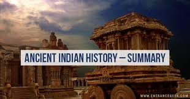

| ERA | TIME-PERIOD |
|---|---|
| ancient-india | till 800AD |
| medievial-india | 750AD-1000AD |
| modern-india | EUROPIAN INVASION---- |
The Indian subcontinent, the great landmass of South Asia, is the home o one of the world’s oldest and most influential civilizations. In this article, the subcontinent, which for historical purposes is usually called simply “India,” is understood to comprise the areas of not only the present-day Republic of India but also the republics of Pakistan (partitioned from India in 1947) and Bangladesh (which formed the eastern part of Pakistan until its independence in 1971). For the histories of these latter two countries since their creation, see Pakis tan and Bangladesh. Since early times the Indian subcontinent appears to have provided an attractive habitat for human occupation. Toward the south it is effectively sheltered by wide expanses of ocean, which tended to isolate it culturally in ancient times, while to the north it is protected by the massive ranges of the Himalayas, which also sheltered it from the Arctic winds and the air currents of Central Asia. Only in the northwest and northeast is there easier access by land, and it was through those two sectors that most of the early contacts with the outside world took place. Within the framework of hills and mountains represented by the Indo-Iranian borderlands on the west, the Indo-Myanmar borderlands in the east, and the Himalayas to the north, the subcontinent may in broadest terms be divided into two major divisions: in the north, the basins of the Indus and Ganges (Ganga) rivers (the Indo-Gangetic Plain) and, to the south, the block of Archean rocks that forms the Deccan plateau region. The expansive alluvial plain of the river basins provided the environment and focus for the rise of two great phases of city life: the civilization of the Indus valley, known as the Indus civilization, during the 3rd millennium BCE; and, during the 1st millennium BCE, that of the Ganges. To the south of this zone, and separating it from the peninsula proper, is a belt of hills and forests, running generally from west to east and to this day largely inhabited by tribal people. This belt has played mainly a negative role throughout Indian history in that it remained relatively thinly populated and did not form the focal point of any of the principal regional cultural developments of South Asia. However, it is traversed by various routes linking the more-attractive areas north and south of it. The Narmada (Narbada) River flows through this belt toward the west, mostly along the Vindhya Range, which has long been regarded as the symbolic boundary between northern and southern India.